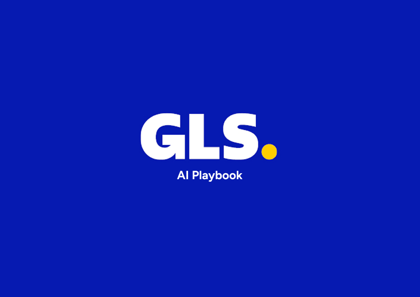
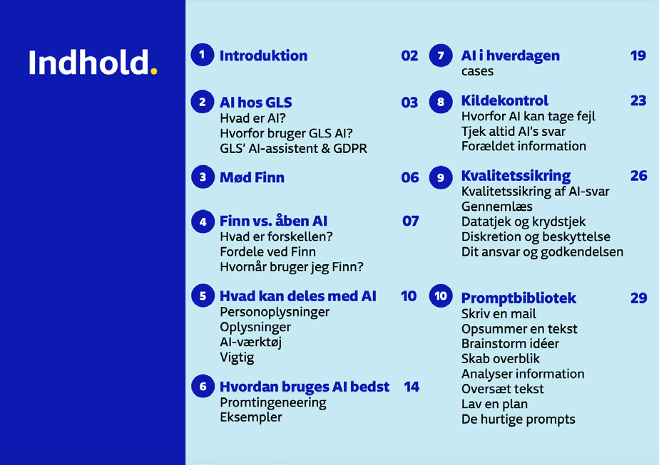
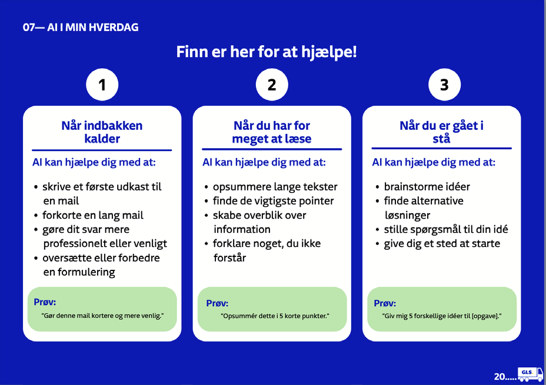
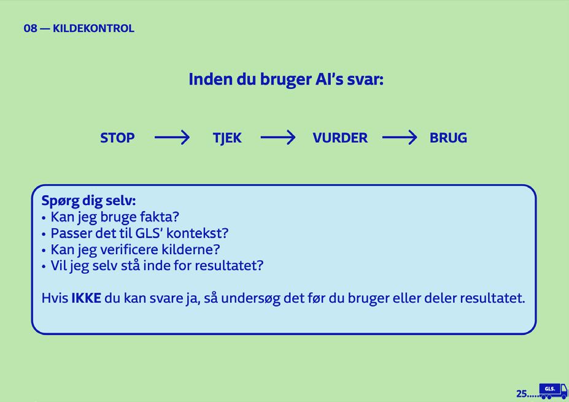

GLS AI Playbook
An internal guide teaching GLS employees to use their AI assistant safely, effectively, and with confidence
Overview
GLS built its own AI assistant, Finn, for everyday tasks like drafting emails, summarizing documents, and brainstorming. But a tool alone doesn’t give people the judgment to use it well. This ten-chapter, GLS-branded playbook teaches employees when to use Finn versus open tools like ChatGPT, what information is safe to share, how to prompt effectively, and how to check AI output before it goes out.
Tools used
Challenge
Unguided AI use carries real risk in a logistics company. Employees needed fast answers: Is this customer data safe to paste? Finn or ChatGPT? Is this output correct? The task was translating GDPR, data security, and quality control into simple, decision-ready guidance a busy person can follow mid-workday.
Concept
Finn is presented as a character, “a helpful colleague, not an answer key,” so the key message (you’re still responsible for what you send) feels natural, not like a compliance warning. The guide moves from context to action: what AI is, Finn versus open tools, then practical frameworks (a data-sharing flowchart, a five-part prompt structure, a verification checklist), closing with a ready-to-use prompt library.




Process
I started by researching Finn’s actual data access, retention, and guardrails, so the guide would be accurate about a real system. Chapters follow real workday moments (an overflowing inbox, a document too long to read) rather than features. Visually, the playbook works entirely inside GLS’s brand system: GLS Blue and Yellow, the dot-and-arrow key visual, and strictly linear icons. Two soft background tones separate chapters without adding new colors, and numbered badges break dense guidance into scannable steps.
Outcome
A structured playbook that turns policy into fast, practical decisions, and reads as an official, trustworthy GLS document from page one.